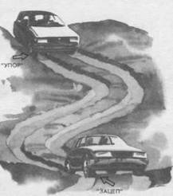

Стабилизация автомобиля в колее
Одной из типичных неровностей наших дорог является колея, которая на малой скорости не вызывает особых проблем, кроме возможности повредить автомобиль или застрять на мягком или скользком грунте с опорой на днище автомобиля. Однако даже неглубокая колея, в которую автомобиль попадает на высокой скорости, представляет большую опасность. Вход в колею сопровождается снижением управляемости из-за ограниченных возможностей поворота колес. Если автомобиль входит в колею под углом, то часто возникает критическая ситуация, при которой передние колеса попадают в колею, а задние свободно скользят сбоку от нее, вызывая резкий занос автомобиля. Аналогичные трудности могут возникнуть при выходе из колеи, когда передние колеса после подскока или резкого “зацепа” выходят из колеи, а задние остаются в ней. Чаще всего возникает вращение автомобиля вокруг задней оси.
Сам процесс удержания автомобиля в колее вызывает определенные трудности, так как многократные касания боковой поверхностью колеса бортика колеи приводят к рысканью автомобиля. Резонанс этих явлений может явиться причиной выброса из колеи пары передних или задних колес и внезапной потери устойчивости и управляемости.
Избежать рысканья автомобиля в колее и повысить управляемость можно, искусственно прижимая колеса внутренней или наружной стороной к боковой стенке колеи, используя для этого “упор” (см. прием 27), “зацеп” (см. прием 26) или их комбинацию попеременно. При искривлении колеи большую эффективность имеет “упор”, так как он позволяет использовать мощность двигателя и его тормозные возможности для борьбы с центробежной силой. “Зацеп” не обладает такими возможностями, так как подворачивающаяся покрышка сцепляется с дорогой беспротекторной частью, которая легко выскальзывает из колеи при увеличении скорости или пробуксовке колеса.
К особенностям управления автомобилем в колее следует отнести мягкое уступающее руление. Оно позволяет сгладить резкие удары о бортик колеи и сохранить непрерывным контакт с дорогой. Во многих случаях (крутой спуск, обледенелый поворот) колея может быть использована для повышения управляемости автомобиля на заданной траектории движения.

Чтобы сделать колею более безопасной для себя и своего автомобиля, постарайтесь входить в нее под острым углом, постоянно использовать “зацеп” или “упор”, чтобы избежать рысканья автомобиля и выброса колес. Удержаться в колее вам поможет мягкое уступающее руление двумя руками.
Особое внимание следует уделить входу в колею, так как при резком контакте с нею могут возникнуть подброс управляемых колес и соскальзывание передней оси. Поэтому для входа в колею желательны заниженная скорость и плавное сближение с колеёй.